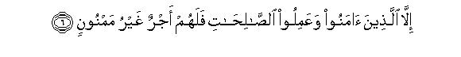
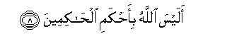

بسم الله الرحمن الرحيم
Sayyid Abul Ala Maududi - Tafhim al-Qur'an - The Meaning of the Qur'an
 95.
Surah At Tin (The Fig)
95.
Surah At Tin (The Fig)
The Surah has been so named after the very first word at-tin.
According to Qatadah, this Surah is Madani. Two different views have been reported from Ibn Abbas: first that it is a Makki Surah, and second that it is Madani. But the majority of scholars regard it as a Makki revelation, a manifest symbol of which is the use of the words hadh-al-balad-il-amin (this city of peace) for Makkah. Obviously, if it had been revealed at Madinah, it would not be correct to use the words "this city" for Makkah Besides, a study of the contents of the Surah shows that it belongs to the earliest period of Makkah, for in it there is no sign whatever to indicate that during the period of its revelation any conflict had started between Islam and unbelief. Moreover, it reflects the same style of the earliest revelations of Makkah period in which briefly and succinctly the people have been made to realize that the judgment of the Hereafter is necessary and absolutely rational.
Its theme is the rewards and punishments of the Hereafter. For this purpose first swearing an oath by the habitats of some illustrious Prophets, it has been stated that Allah has created man in the most excellent of molds. Although at other places in the Quran, this truth has been expressed in different ways, for example, at some places it has been said: "Allah appointed man His vicegerent on the earth and commanded the angels to bow down to him (Al-Baqarah: 30,34, Al-Anam: 165, Al-Araf: 11, Al-Hijr 28,29, An-Naml: 62, Suad 71- 73);" at others that: "Man has become bearer of the Divine trust, which the earth and the heavens and the mountains did not have the power to bear (Al-Ahzab 72);" and at still others that: "We honored the children of Adam and exalted them above many of Our other creatures (Bani Israil 70)," yet here the statement made on oath in particular by the habitats of the Prophets that man has been created in the finest of molds, signifies that mankind has been blessed with such an excellent mold and nature that it gave birth to men capable of attaining to the highest position of Prophethood, a higher position than which has not been attained by any other creature of God.
Then, it has been stated that there are two kinds of men. those who in spite of having been created in the finest of molds, become inclined to evil and their moral degeneration causes them to be reduced to the lowest of the low, and those who by adopting the way of faith and righteousness remain secure from the degeneration and consistent with the noble position, which is the necessary demand of their having been created in the best of molds. The existence among mankind of both these kinds of men is such a factual thing which no one can deny, for it is being observed and experienced in society everywhere at all times.
In conclusion, this factual reality has been used as an argument to prove that when among the people there are these two separate and quite distinct kinds, how can one deny the judgment and retribution for deeds If the morally degraded are not punished and the morally pure and exalted are not rewarded and both end in the dust alike, it would mean that there is no justice in the Kingdom of God; whereas human nature and common sense demand that a judge should do justice. How then can one conceive that Allah, Who is the most just of all judges, would not do justice?

In the name of Allah, the Compassionate, the Merciful.



[1-8] By the fig and the olive,1 and the Mount Sina,2 and this City of peace (Makkah), We have indeed created man in the finest of molds,3 then We reversed him to the lowest of the low,4 except those who believed and did good works. For them there is a reward unending.5 Therefore, (O Prophet,) who can .after this belie you concerning the rewards and punishments?6 Is not Allah the best of all judges?7
1There has been much difference of opinion among the commentators about the explanation of this verse. Hasan Basri. `Ikrimah, `Ata' bin Abi Rabah, Jabir bin Zaid, Mujahid and Ibrahim Nakha'i (may Allah bless them all) say that the fig implies the same fig which the people eat, and the olive the same which produces oil. Ibn Abi Hatim and Hakim have cited a statement from Ha 'Abdullah bin 'Abbas also in support of this. And the commentators who have accepted this explanation have, in view of the uses and virtues of the fig and the olive, expressed the opinion that Allah has sworn by these two fruits because of these very qualities. There is no doubt that the Arabic reader would understand the words do and zayun in the same meaning as are their well known meanings in Arabic, yet there are two reasons for which these meanings cannot be accepted. First, that in the subsequent verses, oaths have been sworn by the Mount Sinai and the City of Makkah, and there seems to be no relevance between the oaths sworn by the two fruits and the oaths by the two places. Second, the theme that follows the oaths is borne out by the Mt. Sinai and the City of Makkah but not by the two fruits. Wherever in the Qur'an Allah has sworn by something, He has not sworn by it because of its glory or its uses and benefits but every oath has relevance to the theme that follows it. Therefore, the virtues and qualities of these two fruits cannot be regarded as the reason for swearing the oath by them.
Some other commentators have taken tin and zaytun to imply some places. Ka`b Abhar, Qatadah an Ibn Zaid say that tin implies Damascus and zaytun Bait al-Maqdis (Jerusalem). A view of Ibn 'Abbas has been cited by Ibn Jarir, Ibn Abi Hatim and Ibn Marduyah to the effect that tin implies the mosque of the Prophet Noah, which he built on Mt. Judi, and zaytun implies Bait al-Maqdis, but hearing the words wat-tin waz-zaytin, no ordinary Arab could think of these meanings, nor was it well known among the Arabs, who were the first addressees of the Qur'an that ain and zaytun were names of the places.
However, there was a practice among the people of Arabia that they generally named a land where a certain fruit was produced in plenty after the name of the fruit itself. Accordingly, the meaning. Of tin and zaytun can be the land where these fruits are grown, and it is the land of Syria and Palestine, for among the Arabs of that period this very land was well known for the production of fig and olive. lbn Taimiyah, Ibn al-Qayyim, zamakhshari and Alusi (may Allah show them mercy) have adopted this very explanation; and although Ibn Jarir also has preferred the first view, yet he has conceded that ain and zaytun may also imply the land where these fruits are grown. Hafiz Ibn Kathir also has regarded this explanation as worthy of consideration.
2The words in the original are Tur- i-Sinin. Sinin is another name for the Sinai Peninsula. It is called Sama or Sina as well as Sinin. In the Qur'an itself at one place the words Tur-i-Sinin. have been used. Since the land in which Mt. Sinai is located is well known as Sina, we have adopted this well known name in the translation.
3This is the truth for which the oath has been sworn by the lands of the fig and the olive (i.e. Syria and Palestine) and Mt. Sinai and Makkah, the city of peace. Man's having been created in the most excellent of molds means that he has been given the finest body which no other living being has been given, and he has been blessed with the noblest faculties of thought, knowledge and intellect which no other creature has been blessed with. Then, since the most sublime model these excellencies and . unique merits of mankind's are the Prophets (upon whom be Allah's peace), and no creation can have a higher rank than they, so that Allah may choose it for appointment to the office of Prophethood, an oath has been sworn by the places associated with the Prophets of God to bear testimony to man's having been created in the finest of molds. The land of Syria and Palestine is the land where a large number of Prophets, from the Prophet Abraham (peace be upon him) to the Prophet Jesus (peace be upon him), were raised. Mt. Tur is the place where the Prophet Moses was blessed with Prophethood. As for Makkah, it was founded by the Prophets Abraham and Ishmael themselves. It was on account of their association with it that ' it became the holiest central place of Arabia. It was the Prophet Abraham who had prayed: "O my Lord, make this city a city of peace and security." (Al-Baqarah: 126); and it was because of this prayer that in the midst of chaos and confusion prevailing everywhere in Arabia only this city continued to remain an island of peace for some 2500 years or more. Thus, the verse means to say: "We created mankind in such an excellent mold that it produced men who attained to the most sublime rank of Prophethood."
4The commentators in general have given two meanings of this:
(1) That We reversed him to the miserable state of old age in which he was no longer able to think and understand and work; and
(2) that We reversed him to the lowest stage of Hell.
But these two meanings cannot be an argument for the object for the confirmation of which this Surah was revealed. The Surah is meant to reason out the truth of the judgment in the Hereafter. On this, neither has this tact any bearing that some human beings are caused to reach the most miserable state of old age, nor that a section of human beings will be cast into Hell. The first thing cannot be an argument for the judgment because old age comes upon both the good and the bad people, and a person's reaching this age is no punishment which he might suffer in consequence of his deeds. As for the second thing, it will occur in the Hereafter. It cannot be presented as an argument before the people who are being convinced of the meting out of rewards and punishments in the Hereafter itself. Therefore in our opinion the correct meaning of the verse is: After having been created in the finest of molds when man uses the powers of his body and mind in evil ways Allah grants him the power to do only evil and causes him to reach the lowest ebb of degradation. This is a truth which one commonly observes in human society. People become so overwhelmed by greed, selfishness, lustfulness, addiction to intoxicants, meanness, rage and fury and such other traits that morally they are actually reduced to the lowest of the low. Consider only one example: When a nation is blinded by its hostility to another country it surpasses all savage beasts in barbarity. A wild beast preys upon its victim only for the sake of food, it does not resort to a general massacre; but man resorts to massacre of his own kind. The beast only uses its claws and teeth but man who has been created in the best of molds invents the gun, rifle, tank, aircraft, atom and hydrogen bombs and countless other weapons by his intellect so that he can instantly destroy whole populations. The beast only kills or inflicts a wound but man invents such painful methods of torturing men like himself as cannot even be -imagined by a' beast. Then to wreak his vengeance and fury on his enemies he forces the women to march out in naked processions: they are subjected to rape by tens and twenties of men; they are dishonored before the eyes of their fathers, brothers and husbands; children are massacred in front of their parents; mothers are forced to drink their children's blood; human beings are burnt and buried alive. There is no wild species of animals in the world which may equal this human barbarity in any degree. The same is also the case with other evil traits: man proves himself to he the lowest of the low in whichever evil he indulges. So much so that he degrades even religion which is the most sacred thing for man: he worships the trees, animals and mountains, even the sex organs of man and woman; he keeps religious prostitutes in the places of worship to win the goodwill of the gods and commits adultery with them as an act of virtue. In his mythology he attributes such filthy tales to his gods and goddesses which would make the most wretched beast to hang his head in shame.
5The commentators who have taken asfala safilin to imply the state of extreme old age when man loses his sense and reason, interpret this verse to mean: "But the people who in the prime and strength of their age believed and did righteous deeds would have in this old age too the same righteous deeds credited for them and will be rewarded accordingly. No reduction will be made in their rewards on the ground that they could not perform those righteous deeds in that period of Iife". And the commentators who construe reversal to safilin to imply being cast into the lowest stage of Hell interpret this verse to mean: "the people also believed and did righteous deeds are an exception: they will not be reversed to this stage but they will have a reward unending and unfailing." But, neither of these meanings is relevant to the reasoning made in this Surah to justify the judgment of the Hereafter. In our opinion the verse means: "Just as it is a common observation in human society that the morally degraded are made the lowest of the low, so this also is an observation of every age that those who believed in God, the Hereafter and the Prophethood and who molded their lives after righteousness and piety, remained secure from this degeneration and remained consistent with the best mold and nature that Allah had created them on. Therefore, they are worthy of the unending reward, i.e. the reward which will neither be less than what they deserve, nor will it ever be cut off. "
6Another translation of this verse can be: "What can after this (O man ) make you deny the judgment ?" In both cases the intention and purpose remains the same. That is when it is a common observation in human society that a section of mankind which has been created in the best of molds and nature, is rendered lowest of the low because of moral degradation, and the other section remains secure by adopting the path of constant faith and righteousness in view of its being created in the best of molds and nature how can judgment be denied after this ? Does common sense require that the end of both these men be the same? Does justice demand that neither those who are reduced to the lowest of the low be punished nor those who strive to adopt a righteous life be rewarded ? The same theme has been expressed at other places in the Qur'an thus: "Shall We then treat the obedient as We treat the culprits? What has happened to you: how ill you judge?" (AI-Qalam: 35, 36). "Do those who have committed evil think that We shall hold them and those who have believed and done righteous deeds as equal so that their life and their death should be alike ? Ill are the judgments they pass!" (Al-Jathiyah 21).
7That is, "When you want and expect even the petty judges of the world to do justice, punish the culprits and reward the doers of good, what is your opinion about God? Is He not the greatest of all judges? If you think he is the . greatest of all judges, do you think that He will not do any justice? Do you expect that He will treat the good and the evil alike? Will those who commit the vilest of deeds in the world and those who perform righteous deeds, both end in the dust: neither will any be punished for his evil deeds, nor any be rewarded for his good works''
Imam Ahmad, Tirmidhi, Abu Da'ud, Ibn al-Mundhir, Baihaqi, Hakim and Ibn Marduyah have related, on the authority of Hadrat Abu Hurairah, that the Holy Prophet (upon whom be peace) said: "When one of you recites Surah Wat-tin waz-zaytun and reaches Alais-Allah-u bi-ahkam-il-Hakimin he should respond to it, saying: Bata wa ana ala dhalika min-ash-shahidin (Yes, and I am of those who bear witness to it). According to some other traditions, the Holy Prophet responded with Subhanaka fa-bald when he recited this verse.